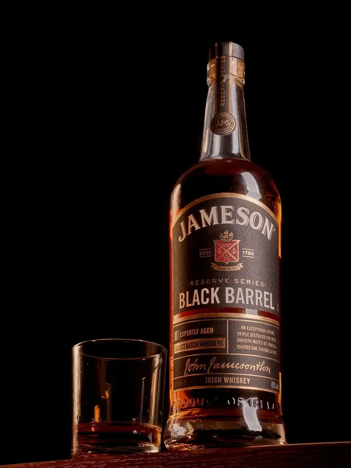
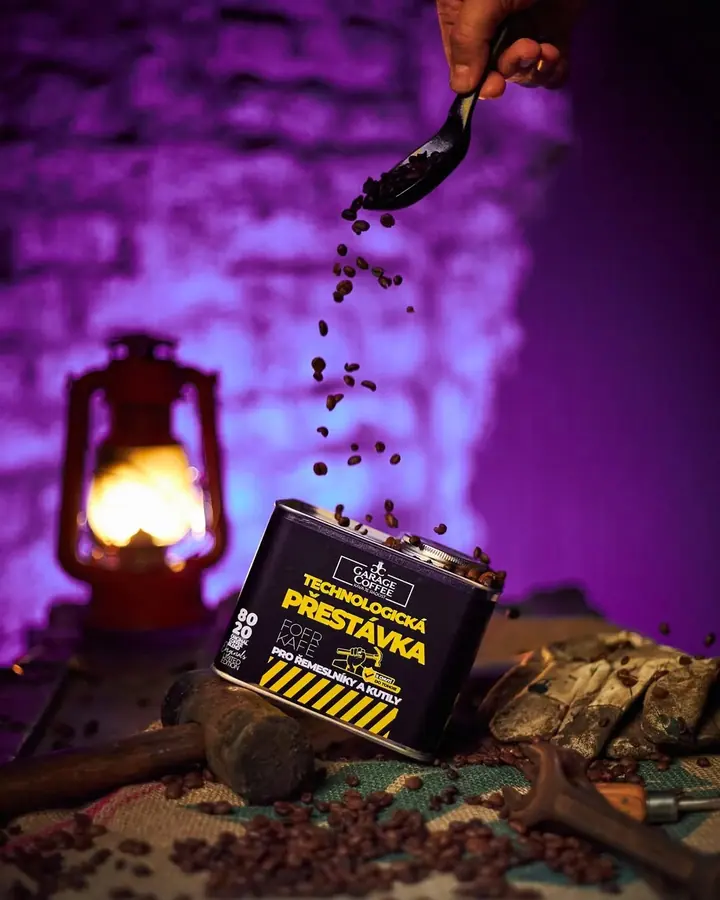
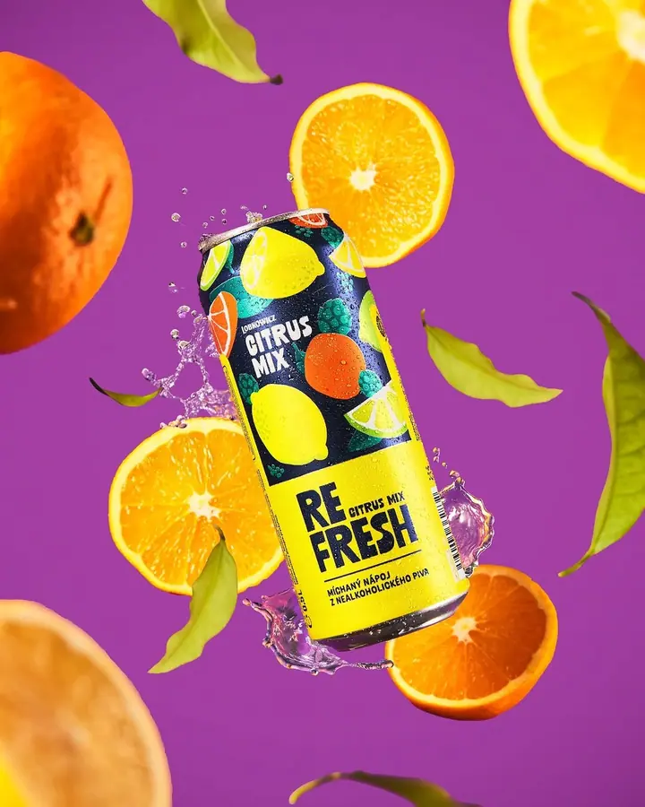
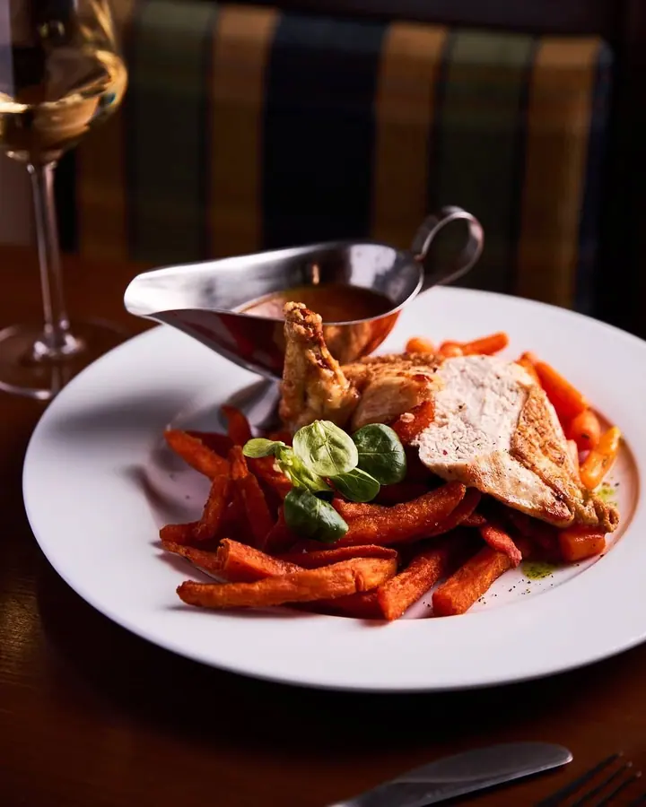
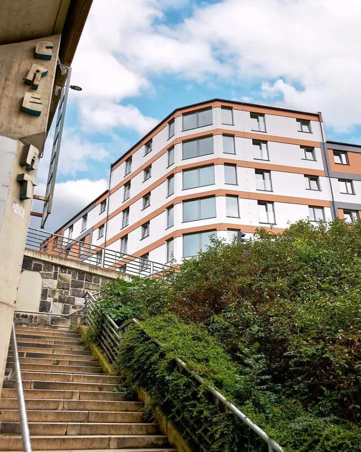
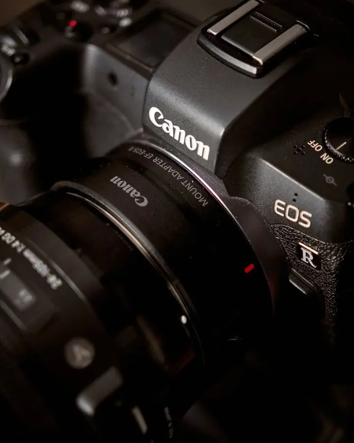
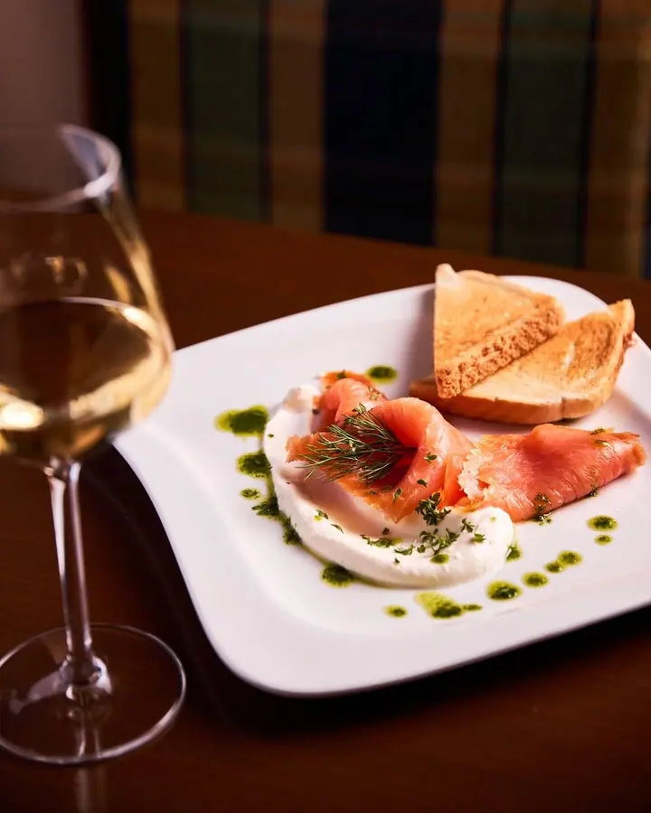
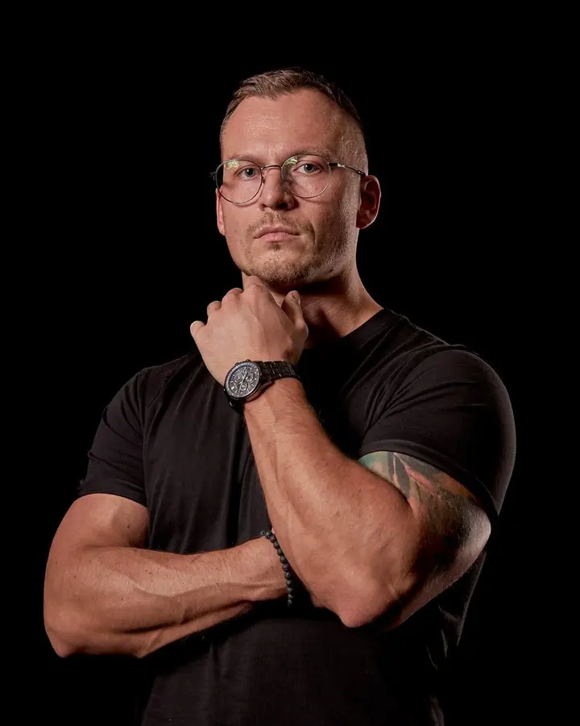
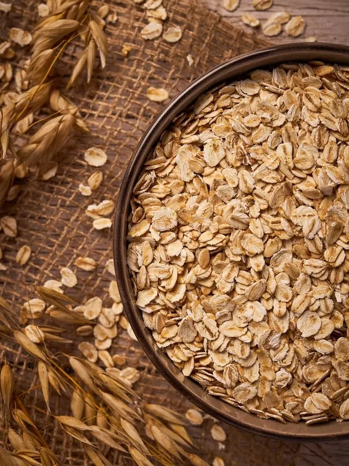

01 / 04
Produktová fotografie
Výrobky fotím tak, aby byla vidět jejich kvalita a aby fotky pomáhaly prodávat. Postarám se o nasvícení, stylizaci i úpravu snímků a vše ladím podle vizuální identity vaší značky.
Zeptat se na termín→








Každý produkt má svůj příběh
Zeptat se na termín →(01) Ahoj
Jmenuji se Mirek Duhoň a jsem produktový fotograf z Plzně. Fotím výrobky , jídlo pro restaurace a e-shopy i business portréty . Všechno s jediným cílem: aby fotky vaše zákazníky zaujaly a přivedly je k objednávce.
(02) Co fotím
01 / 04
Výrobky fotím tak, aby byla vidět jejich kvalita a aby fotky pomáhaly prodávat. Postarám se o nasvícení, stylizaci i úpravu snímků a vše ladím podle vizuální identity vaší značky.
Zeptat se na termín→02 / 04
Fotím jídla a interiéry restaurací pro web, menu i sociální sítě. Snímky jsou čisté a dobře nasvícené, a přitom působí přirozeně.
Zeptat se na termín→03 / 04
Někdy je produktem i člověk. Pro váš web a profily připravím portréty, které působí profesionálně a sedí ke stylu vaší značky.
Zeptat se na termín→Dále nabízím
Pro realitní makléře a majitele fotím nemovitosti zvenku i uvnitř. Hledám správný úhel, světlo a kompozici, aby inzerát zaujal.
↗(04) Postup
Od první zprávy po hotovou galerii.
Krok 1 z 4
Nejdřív spolu probereme styl a účel fotografií. Fotky ladím podle vaší značky, tedy barev, tónu, světla i kompozice.
Krok 2 z 4
Po převzetí produktů připravím scénu a nafotím zkušební záběry, které vám pošlu ke schválení.
Krok 3 z 4
Jakmile záběry schválíte, následuje samotné focení a postprodukce, aby každý snímek vystihl charakter produktu.
Krok 4 z 4
Hotové fotky dostanete v plném rozlišení pro tisk i v optimalizované verzi pro web a e-shop, připravené k okamžitému použití.
Fotky, které produkt nejen ukazují, ale prodávají.
(05) Za objektivem
Věřím, že každý produkt má svůj příběh, a mým úkolem je převést ho do obrazu, který osloví vaše zákazníky. Je jedno, jestli je to váš výrobek, jídlo, nemovitost, nebo třeba vy sám. Každý projekt beru jako výzvu a hledám ten správný úhel, světlo a kompozici.
Produktová fotografie pro mě není jen o hezkých obrázcích. Jde o prezentaci, která pomáhá prodávat. Proto si hraju s každým detailem, se světlem i texturami, aby vynikla kvalita produktu a značka získala silnější vizuální identitu.
Rád jsem u celého procesu, od první konzultace až po finální úpravy. Fotím ve vlastním ateliéru, ale klidně přijedu i za vámi, když je potřeba ukázat produkt v jeho přirozeném prostředí.
Mirek
Mirek Duhoň · Produktový a food fotograf
Cena se odvíjí od typu produktu, počtu záběrů a požadovaného stylu. Každou zakázku proto nacením individuálně, vždy férově a s ohledem na výslednou kvalitu.
Standardně do 5–10 pracovních dnů podle rozsahu zakázky. U menších projektů nabízím i expresní zpracování, u velkých se dodání může protáhnout. Termín vždy doladíme společně.
Obojí je možné. Mám vlastní ateliér vybavený pro produktové focení, ale rád dorazím i k vám, pokud chcete produkty ukázat v jejich přirozeném prostředí.
Určitě. Pro značky, které pravidelně doplňují sortiment, nabízím dlouhodobou spolupráci s jednotným vizuálním stylem a zvýhodněnou cenou.
(07) Kontakt
Napište pár vět o tom, co si představujete, a termín, který se vám hodí.
info@mirekduhon.cz